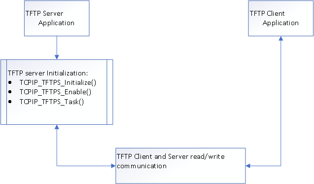

The TFTP communication is based on a client/server model. The process of transferring a file consists of three main phases. In highly generalized terms, these phases are:
- Initial Connection:
- The TFTP client establishes the connection by sending an initial request to the server.
- The server responds back to the client and the connection is effectively opened.
- Data Transfer:
- Once the connection has been established, the client and server exchange TFTP messages. One device sends data and the other sends acknowledgments.
- Connection Termination:
- When the last TFTP message containing data has been sent and acknowledged, the connection is terminated.
TFTP Server Software Abstraction Block Diagram
